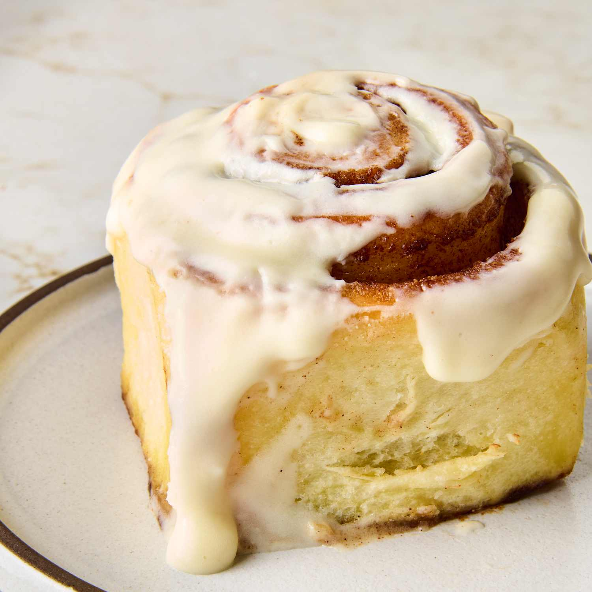
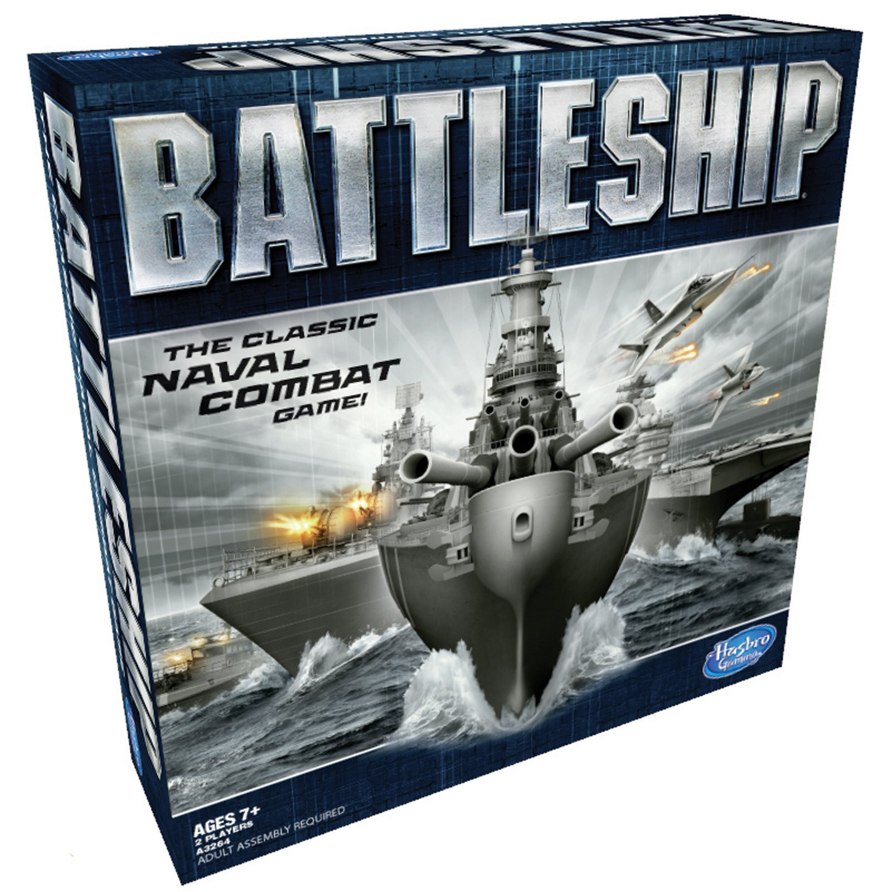

<!doctype html>
<html>
  <head>
    <!-- This title is used for tabs and bookmarks -->
    <title>Lab 4 - Pseudocoding and Problem-solving</title>

    <!-- Use UTF character set, a good idea with any webpage -->
    <meta charset="utf-8" />
    <!-- Set viewport so page remains consistently scaled w narrow devices -->
    <meta name="viewport" content="width=device-width, initial-scale=1.0" />
    
    <!-- Include a sitewide CSS file for consistent styling across the site -->
    <link rel="stylesheet" type="text/css" href="../css/site.css" />
    <!-- Lab-specific CSS file for any special styling of this particular page -->
    <link rel="stylesheet" type="text/css" href="css/lab.css" />
    
    <!-- Load jQuery library to make javascript easier (must be above our lab js) -->
    <script src="https://code.jquery.com/jquery-3.6.4.min.js"></script>
    <!-- Link to javascript file - defer waits until all elements are rendered -->
    <script type="text/javascript" src="./js/lab.js" defer></script>
  </head>
  <body>
    <!-- Style this page by changing the CSS in ../css/site.css or css/lab.css -->
    <main id="content">
      <section>
        <h1>Lab 4 - Pseudocoding and Problem-solving</h1>

        <div class="minor-section">
          <h2>Challenge</h2>
          <p>Write pseudocode for an everyday task and a simple game.</p>
        </div>

        <div class="minor-section">
          <h2>Reflection</h2>
          <h3>Leon</h3>
          <p>I took the wheel and I was driving. I wrote the pseudocode 
            for how to make a cinnamon roll. Then as I added the pseudocode to 
            the lab4 html section on the website my partner wrote the pseudocode 
            for battleship. After he was done with that I then added the pseudocode 
            for battleship in the lab4 html section as well as the javascript section 
            (as comments). Nate suggested to include photos for the cinnamon roll and 
            battleship tasks so we spent some time looking for appropriate images and 
            then I used CSS to make them not super huge on the website. 
          </p>

          <h3>Nate</h3>
          <p>
            Once again for this assignment I took a leadership role. I wrote the 
            outline for the document, I broke down the tasks, and I wrote the pseudo 
            code for battleship. Then my partner wrote the code for the website under 
            my guidance. 
          </p>
        </div>

        <div class="minor-section">
          <h2>Results</h2>
          <div id="output"></div>

          <h3>Task 1</h3>
          <h4>How to make cinnamon rolls</h4>
          
          <p>
            1. Assemble ingredients and equipment (spatulas, pans, etc) <br />
            2. Combine ingredients in mixing bowl <br />
            3. Knead dough <br />
            - Place dough on floured surface <br />
            - Knead until dough is smooth <br />
            - Spread butter, cinnamon, and brown sugar on dough <br />
            4. Roll dough <br />
            - Cut into rolls <br />
            - Place into pan <br />
            5. Bake dough <br />
            - Preheat oven <br />
            - Cover pan with baking sheet and place dough <br />
            6. Frosting <br />
          </p>

          <h3>Task 2 & 3</h3>
          <h4>Battleship</h4>
          
          <p>
            1. Print the board <br />
            2. Prompt user for ship placements <br />
            3. Store positions for later <br />
            4. Process user turn <br />
            - Ask where they would like to fire <br />
            - Check if it's a valid position on enemy board <br />
            - Print result <br />
            5. Repeat for next player <br />
            6. Check win condition (No more ships left) <br />
          </p>

          <pre>
// Battleship
// An implementation of the game
// Leon Linke <llinke@ucsc.edu>
// Nate Arnold <naarnold@ucsc.edu>
// April 21 2024

// 1. Print the board
// 2. Prompt user for ship placements
// 3. Store positions for later
// 4. Process user turn
    // Ask where they would like to fire
    // Check if it's a valid position on enemy board
    // Print result
// 5. Loop for next player
// 6. Check win condition (No more ships left)
          </pre>
        </div>
      </section>

      <nav id="links">
        <li><a href="../index.html">Homepage</a></li>
      </nav>
    </main>
  </body>
</html>
